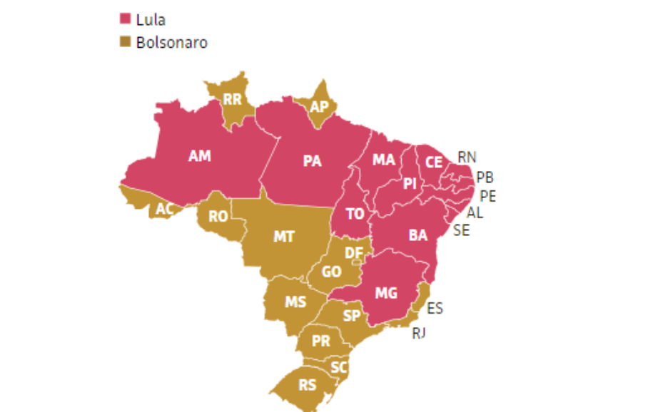

Estatísticas
Vitória por estado
Treze estados brasileiros deram maioria dos votos a Lula. Outras 14 unidades da federação concederam a maior fatia a Bolsonaro. O Piauí registrou a maior distância entre os candidatos: o petista ficou com 76,86% dos votos, enquanto o membro do PL teve 23,14% —diferença de 53,72 pontos percentuais.Já Minas Gerais teve a votação mais apertada, com diferença de apenas 0,4ponto percentual. Lula levou 50,2% dos votos contra 49,8% de Bolsonaro no segundo estado mais populoso do país, atrás apenas de São Paulo
Idade Eleitoral
O eleitorado brasileiro em 2022 é 6,21% maior que o registrado em 2018. A informação é do Tribunal Superior Eleitoral (TSE), que divulgou nesta sexta-feira (15) estatísticas sobre os 156 milhões de cidadãos aptos a votar nas eleições deste ano, no dia 2 de outubro. Um dos maiores aumentos registrados foi no número de jovens entre 16 e 17 anos, cujo voto é facultativo. Nas eleições deste ano, 2,1 milhões de jovens nessa faixa etária poderão votar. Em 2018, eram 1,4 milhão. O crescimento equivale a 51,13% nessa faixa etária do eleitorado. Segundo o TSE quase a totalidade dos eleitores jovens que vão votar em 2022 fez cadastro na Justiça Eleitoral nos quatro primeiros meses deste ano, graças a campanhas promovidas para conscientizar os jovens do seu direito. — Os dados demonstram a pujança cívica da cidadania no Brasil. São mais de 156 milhões de eleitores que compõem no cadastro eleitoral o maior eleitorado da história brasileira — disse o presidente do TSE, ministro Edson Facchin, ao divulgar os resultado final da sistematização do cadastramento eleitoral no Brasil. O eleitorado acima de 70 anos também cresceu. O salto foi de 23,82%, de 12 milhões em 2018 para 14,8 milhões em 2022. Esse número representa 9,52% de todo o eleitorado apto a votar no dia 2 de outubro. O voto nessa faixa etária também é facultativo, assim como acontece com os jovens e os analfabetos. Fonte: Agencia Senado .